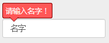

$.fn.popover(message, pos)
在控件的指定位置弹出一个提示信息（泡泡信息），一般用作表单控件错误提示。
pos: top|bottom|left|right
【定义】 文件：xiunoui/xiuno.js 大约 1289 行：
$.fn.popover = function(message, pos, classname) {
if(!pos) pos = 'top';
classname = classname ? ' ' + classname : '';
var jthis = $(this);
if(jthis.length == 0) return;
var offset = jthis.position(); // offsetParent
var width = jthis.width();
var height = jthis.height();
var left = offset.left;
var top = offset.top;
// 创建 popover
var jpopover = $('<div class="popover'+classname+'" style="display: block"><span class="arrow '+pos+'"></span>'+message+'</div>').insertAfter(jthis);
var pop_width = jpopover.width();
var pop_height = jpopover.height();
if(pos == 'top') {
jpopover.css({left: left, top: top - pop_height - 2});
} else if(pos == 'bottom') {
jpopover.css({left: left, top: top + height + 4});
} else if(pos == 'left') {
jpopover.css({left: left - pop_width - 2, top: top + (height > pop_height ? ((height - pop_height) / 2) : 0)});
} else if(pos == 'right') {
jpopover.css({left: left + width + 2, top: top + (height > pop_height ? ((height - pop_height) / 2) : 0)});
}
jthis.on('change keyup click blur', function() {
jpopover.remove();
});
this.jpopover = jpopover;
return this;
}
【用例】
<input type="text" id="id1" value="名字">
<script>
$('#id1').popover('请输入名字！');
</script>
效果：
